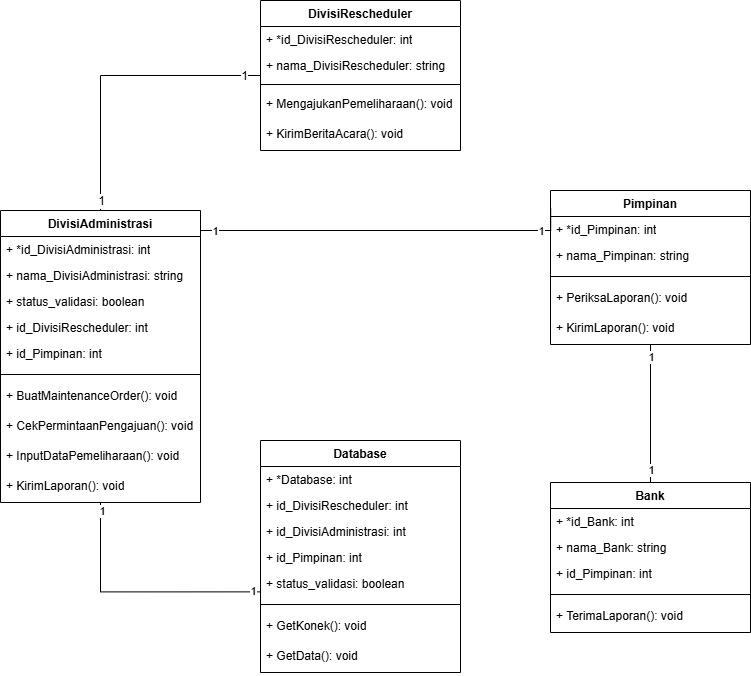

Tugas 2 A Rancangan Sistem Pengajuan Pengisian Uang di ATM Menggunakan Metode Waterfall
- Judul Tugas: Rancangan Sistem Pengajuan Pengisian Uang di ATM Menggunakan Metode Waterfall
- Deskripsi: Membuat usecase,activity diagram tentang pengajuan pengisian uang di atm
- Analisis Kebutuhan
- Sistem harus bisa pengajuan pengisian Uang di ATM
- Sistem harus memiliki fungsi cek atau verifikasi terhadap pengajuan pengisian.
- Sistem harus mengelola proses serah terima Box Cash Order dalam Berita Acara Serah Terima Box.
- Sistem harus dapat menginputkan data hasil replenishment ke database.
- Sistem harus menghasilkan laporan cash replenishment secara otomatis setelah data diinput ke database.
- Sistem harus memproses validasi pengajuan dan pembuatan laporan dalam waktu cepat.
- Sistem harus melindungi seluruh data baik data transaksi maupun data pengajuan pengisian
- Sistem harus memiliki uptime sebesar 99,9% agar selalu siap digunakan dalam operasional.
- Laporan harus akurat, real-time, dan tersedia dalam format yang mudah dipahami (PDF, Excel, atau digital dashboard).
- Desain Sistem
- Scheduler : Antarmuka untuk mengajukan permintaan pengisian
- Administrator : Antarmuka untuk memvalidasi pengajuan pengisian, Input data hasil proses replenishment, Monitoring data transaksi dan pengisian.
- Pimpinan : Antarmuka untuk melihat laporan Cash Replenishment secara real-time, Visualisasi data (grafik, tabel).
- Bank : Antarmuka untuk menerima laporan cash replenishment dalam format yang terstruktur (PDF, Excel, dll.).
- Server : Untuk menyimpan berita acara dan laporan di database
- Alur Proses
-
Pengajuan Pengisian
Scheduler melakukan pengajuan pengisian uang tunai ke Administrator
-
Verifikasi
Administrator melakukan verifikasi pengajuan pengisian uang tunai
-
Box Cash Order
Administrator mengelola proses administrasi cash order
-
Berita Acara
Kasir membuat berita acara serah terima box
-
input Data
Administrator melakukan input data ke database
-
Laporan Cash Replenishment
Pimpinan dan Bank menerima laporan cash replenishment
- Desain Usecase dan Activity Diagram
- Implementasi
- Scheduler : Antarmuka untuk mengajukan permintaan pengisian
- Administrator : Antarmuka untuk memvalidasi pengajuan pengisian, Input data hasil proses replenishment, Monitoring data transaksi dan pengisian.
- Pimpinan : Antarmuka untuk melihat laporan Cash Replenishment secara real-time, Visualisasi data (grafik, tabel).
- Bank : Antarmuka untuk menerima laporan cash replenishment dalam format yang terstruktur (PDF, Excel, dll.).
- Server : Untuk menyimpan berita acara dan laporan di database
- Framework: React.js (untuk Web) atau Flutter (untuk Mobile)
- Styling: Bootstrap CSS
- Bahasa Pemrograman: Node.js dengan Express.js atau Python
- RESTful API untuk komunikasi antara front-end dan back-end
- Pengujian Sistem
- Deployment
- Maintenance
Kebutuhan fungsional
Kebutuhan Fungsional
Arsitektur Sistem
Use Case

Activity Diagram
Sequence Diagram
Class Diagram
Proses ini merupakan proses perancangan sistem berdasarkan desain yang telah dibuat sebelumnya meliputi :
Teknologi bahasa pemrograman yang digunakan yaitu :
Frontend
Backend
Database
Database yang digunakan yaitu mysql
Keamanan
Autentikasi: JWT (JSON Web Token)
Pengujian dilakukan untuk memastikan semua fitur dan alur sudah sesuai, Pengujian ini menggunakan blackbox testing untuk menguji fitur yang telah dibuat. Jika ditemukan bug maka sistem dilakukan perbaikan.
Tahap deployment Sistem Cash Replenishment Mesin ATM menggunakan arsitektur Client-Server, di mana front-end dibangun dengan React.js, sementara back-end menggunakan Node.js yang terhubung ke database MySQL. Proses ini mencakup instalasi dependensi, konfigurasi database, dan pengaturan lingkungan produksi. Sistem diuji untuk memastikan fungsi berjalan optimal, diikuti monitoring performa menggunakan alat seperti htop serta backup data terjadwal untuk menjaga integritas. Dengan langkah ini, sistem siap digunakan untuk mendukung operasional cash replenishment ATM secara efisien.
Tahap maintenance Sistem Cash Replenishment Mesin ATM memastikan sistem tetap optimal, aman, dan stabil pasca-deployment. Pemantauan rutin dilakukan untuk menjaga performa dan stabilitas. Backup data dijadwalkan secara berkala untuk memastikan keamanan data. Keamanan diperkuat melalui pembaruan sistem, implementasi HTTPS, dan audit berkala. Penanganan bug dilakukan dengan memantau log error, pengujian berkala, serta feedback pengguna. Optimasi mencakup pembersihan data, optimasi database, caching, dan peningkatan kapasitas server jika diperlukan. Semua perubahan didokumentasikan dengan pelatihan kepada tim operasional agar sistem berjalan efektif dan mendukung proses secara berkelanjutan.